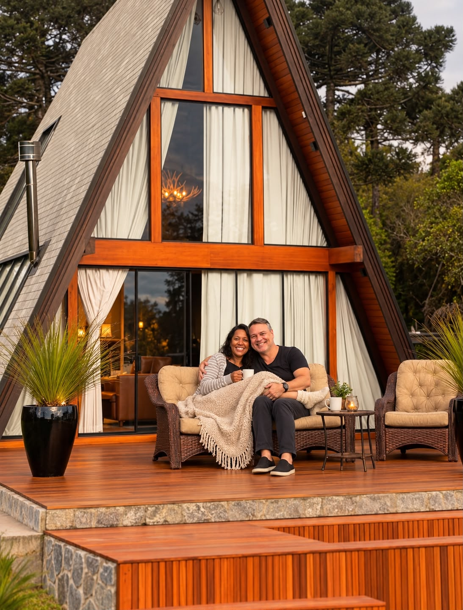
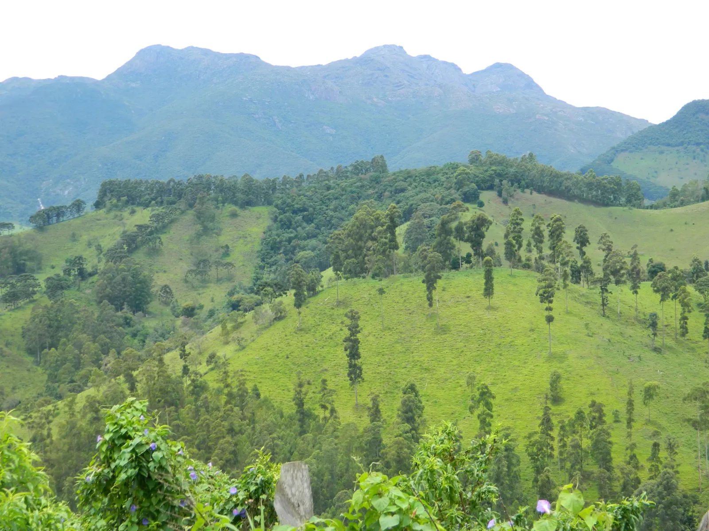

Chalés Pavão · Minas Gerais
Entre montanhas,
um novo refúgio.
Um lugar para respirar fundo.
Uma história que está começando.
O essencial, mais perto
Há lugares que
convidam a ficar.
Entre as montanhas de Minas Gerais, imaginamos um refúgio para viver o tempo com mais calma. Natureza ao redor, espaço para estar junto e uma paisagem que faz parte de cada momento.
Os Chalés Pavão estão em fase de projeto. No terreno, os primeiros trabalhos já preparam o acesso interno — um caminho para o que ainda vai nascer.
Descubra os primeiros estudos

O cenário já existe.
O refúgio começa na paisagem.
Arquitetura & intenção
Do sonho
ao projeto.
Os primeiros traços de um lugar pensado para acolher. Explore os modelos 3D e as inspirações que dão forma a essa ideia.
Estudos e imagens ilustrativas. As diferentes versões representam inspirações e não um projeto final. A construção do chalé ainda não começou.
Diário do terreno
Os primeiros
caminhos.
A história começa pelo acesso. A terraplanagem prepara o caminho interno do terreno, enquanto o chalé segue em fase de projeto.
Etapa atual · Acesso internoO caminho começa
Os primeiros serviços no acesso interno do terreno.
Preparar com cuidado
Registros da execução da terraplanagem.
Novas perspectivas
A área terraplanada e a paisagem que acompanha o percurso.
Fotos reais do terreno · Registros de novembro de 2026 · Serviço de acesso interno, distinto da construção do chalé.
A natureza, em cada detalhe
A vista já está pronta
para encantar.
Das montanhas ao movimento de uma borboleta.
Um pouco do lugar que inspira nosso refúgio.
Antes da sua visita
Uma história
em seus primeiros passos.
O chalé já recebe hóspedes?
Ainda não. Os Chalés Pavão estão em fase de projeto e não há reservas abertas nem uma data de inauguração anunciada.
O que está sendo feito no terreno?
Os trabalhos atuais são de terraplanagem para o acesso interno do terreno. A construção do chalé ainda não começou.
As imagens mostram o chalé pronto?
As paisagens e os registros da terraplanagem são reais. Os modelos 3D, croquis e imagens geradas por IA são identificados como estudos ou ilustrações e podem mudar.
Esta história está só começando
Acompanhe o que vem
pela frente.
Novas imagens, novos caminhos e cada etapa do nosso refúgio.
Nossos canais de contato serão divulgados em breve.
Volte para acompanhar as próximas atualizações.